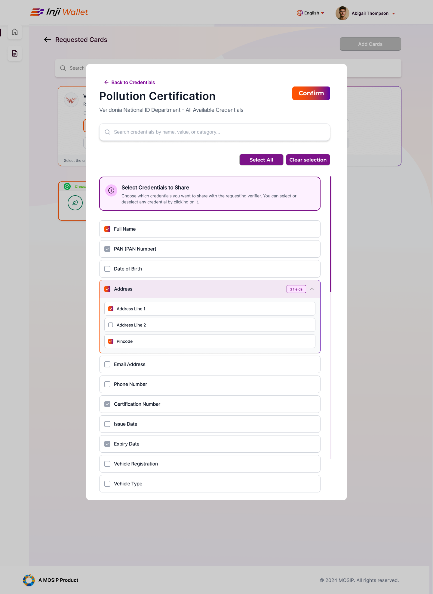

Designing consent when you own less and less of the screen
Four surfaces in a credential wallet, ordered by how much of each I controlled. By the last one, the browser and the operating system have already asked the user twice before my screen loads.
Snapshot
- Role
- Lead Experience Designer, Infosys
- Platform
- Android and iOS. DC API work is Android only.
- Focus
- Consent and sharing flows, credential status, component states, and inclusive onboarding
Inji is adopted and customised by implementing countries. My designs ship as the open-source default that implementers inherit or override. I am setting the floor, not the final experience in any one country.
What this is
The closest familiar thing is Apple Wallet or Google Wallet, holding credentials like a national ID or degree, issued by any government or institution, working offline under no single company's control.
Three parties, with the wallet in the middle:
- The issuer, a government, a university, an insurer, signs a credential and sends it to a holder.
- The holder, the person, in the wallet.
- The verifier, a clerk, a guard, a pharmacist, a website, asks for part of it and checks the signature.
Who uses it, why the stakes differ, and what the standards fix
Who uses it
Holders may be meeting a digital credential for the first time, on an older or shared device, despite years of smartphone use.
Verifiers are usually mid-task, seconds not minutes; a credential nobody will accept is not a credential.
Why the stakes differ
This is public infrastructure, not a consumer app. A failed credential share is not a bad experience; it is a service not received. Someone doesn't collect a payment, doesn't enrol, doesn't get seen.
That changes what a design failure costs, and who absorbs it. The users most likely to hit an edge case are the users least able to survive one.
Standards set the shape
OpenID4VP, SD-JWT, and the W3C Verifiable Credentials data model govern how a credential is presented, shared, and structured. These specifications fix the steps and their order.
One vocabulary decision: the specifications call these pieces claims; the interface calls them information throughout.
A credential is only worth what a verifier will accept, and a wallet is only worth what its holder understands well enough to consent to.
Deciding how much is too much to share at once
DC API and DCQL, two ways a verifier can ask
What testing showed
DC API, the browser-and-OS route that shares a credential without opening the wallet. DCQL, the query language a verifier uses to specify which credential and which information it needs.
Inji supports two ways of sharing, fast instant sharing at the OS level and a fuller in-app review, treated in testing as one decision rather than two capabilities.
Testing here was informal and internal, observations rather than numbers; where I make a claim below, it's an observation.
A cluster of related problems came back, all about volume rather than wording:
- Consent screens became unreadable once a request covered several credentials
- Users had to scroll to see everything being shared, and most didn't
- Nobody could reliably say what a verifier would receive after completing a multi-credential request
The underlying issue: consent that requires scrolling isn't consent. Someone who taps accept without reaching the bottom has technically consented, not actually. Past some threshold, the surface can't carry the decision it's asking for.
The instant-sharing flow
Sharing a credential without opening the Inji wallet app.
What it adds is control. The OS picker establishes which credential; my screen establishes which information within it, the one thing the OS surface can't offer.
The in-app flow
Sharing credentials through the app.
What I've proposed
This has been designed, not shipped. The instant-sharing work has been handed to development and is expected in the next release.
Route by volume: three credentials or fewer go through instant sharing, where speed is the point; more opens the app, where the request can be reviewed properly.
Comprehension broke down between three and five credentials in testing. I'd set the threshold at three and validate it from instrumentation, not judgment.
The protocol appears to permit the handoff, a wallet declining an instant request and escalating into the app. That path isn't implemented yet; confirming it works is the first thing I'd want engineering to check.
The cost is real, every request that crosses the threshold becomes an interruption, but a consent flow that is fast and not understood has failed at the only thing it exists to do.
Showing what's optional and what isn't
SD-JWT selective disclosure
When a verifier asks for a credential, not every piece of information in the request works the same way. Some is mandatory, refuse it and the share fails. Some is genuinely yours to withhold. And some is sent automatically unless you turn it off.
Three different things, and nothing on the screen told them apart.
The first version
One long scrolling list of every field, with the automatic ones greyed out.
Greying something out says you can't change this. It doesn't say why. Someone looking at a dimmed field has no way to know whether the verifier requires it, whether it's broken, or whether they switched it off themselves earlier. The list had no sections and no labels, it implied a hierarchy without ever naming one.
The version that shipped
Two labelled groups instead of one list: Required, and Shared by default. Each group carries one line saying what that means for the person sharing, not what it means in the specification.
Grouping does the work greying couldn't. You don't need to know what SD-JWT is to understand this part is the verifier's condition, this part is your choice, this part goes unless you stop it.
The image bellow shows a detailed view of the rejected design.

display of the scrolling wall of fields for selection during credential sharing. The lack of labels and lack of sorting makes it harder to select for users. Another proposed idea (on the backend) would be to prioritise the fields based on importance.
A status the system cannot explain
Credential states
The wallet shows four states: valid, pending, expired, and revoked.
Three of them are self-explanatory. Revoked is not, and matters most: it's the only state implying something went wrong rather than something ran out.
The constraint
The issuer knows why a credential was revoked; the wallet never learns it, so it can only show the word revoked, an accusation with no explanation or appeal.
What I did, and what I couldn't
I could make the state legible: distinguish revoked from expired, avoid alarm styling that blames the holder, and point toward the issuer rather than a dead end. I couldn't make it explainable, that requires the reason to travel with the revocation, a change to what issuers send.
This is the kind of problem that resolves upward. The right design existed; it just wasn't a design problem. Recognising which of those you have is most of the job.
The states as designed
Four states, one visual system. Valid and pending share a neutral treatment because neither requires action. Expired and revoked both block a share, but only one implies fault, so expired reads as a lapsed date and revoked as a status change, without the red-alert styling that would tell a holder they had done something wrong. The difference between the two is carried by label and hierarchy rather than by colour, because colour alone would not survive the range of devices and display settings this ships to.
Revoked is the only state that implies something went wrong rather than something ran out.
Designing for socio-economic difference
SESMAG, the Socio-Economic Magnifier
SESMAG is a formal inclusive-design method evaluating an interface against socio-economic difference, data reliability, device age, and digital experience. That cost matters more here, a failed credential share may mean a low-income user not receiving a service.
I ran a SESMAG analysis of the wallet's onboarding, in a workshop led by a visiting researcher.
What it changed
Four findings and what changed
Finding: The language control, a bare globe icon, was not evident to users unfamiliar with technology.
Change: Added an explanatory label and made the symbol customisable for local context.
Finding: New visitors did not find the language setting before beginning.
Change: Shipped a persistent dropdown instead of a first-visit popup, whose cookie-dependent trigger was the least reliable thing to rely on.
Finding: Users expected their language choice to carry into everything the wallet handed them to, it does not.
Change: Added a warning that language settings do not apply to third-party services.
Finding: Landing-page arrivals had no orientation, and no way to recover it once dismissed.
Change: Extended the tour into the wallet with a reactivation control, since the people likeliest to need it are likeliest to dismiss it by accident.
The three changes, as shipped.
The one that generalised
The third-party language warning is the same problem as instant sharing, one layer down.
In both cases the user makes a choice in our product, gets handed to a surface we do not control, and that surface ignores the choice. I solved it once for language and once for consent before noticing they were the same thing.
Where you own part of a flow and not the rest, the boundary is what needs designing, not either side of it.
What didn't work
An assumption about what users understand. The language prompt was proposed on the reasonable-sounding basis that first-time visitors should be told about a setting they won't find. What that assumed was a user who understands cookies well enough for cookie-dependent behaviour to feel coherent. Most people don't, and a prompt that appears inconsistently for reasons nobody can see is worse than no prompt. It became a dropdown.
A design that lost to the release window. A preview of what a verifier would receive, the request rendered before consent rather than described, was cut because it could not be built in time. It is the single change most likely to fix the comprehension problem in Decision 1, and it is scheduled for the next release. What shipped instead was the labelled grouping, which makes the structure of a request legible even when its contents still aren't.
I would rather have had the preview. Grouping was the version that could exist this cycle, and it was worth protecting rather than waiting.
Consent takes time, and the people giving it are usually in a hurry. Where should that trade-off sit?
Also designed
Three further pieces in design development
Three further pieces of interface work, currently in design development: a redesign of wallet login, multi-account support with profile switching, and a landing page redesign. These are product decisions without a research programme behind them, the everyday half of the role.
Three further pieces of interface work, in design development.
Outcome
Contributed to the credential status and language rendering work released in Inji Mobile Wallet v0.22.0, March 2026, the release notes list improved credential status visibility, language rendering improvements, updated credential offer trust UI, and UI alignment across credential and settings screens.
The instant-sharing work has been handed to development and is expected in the next release, along with the request preview.
Inji is open source. The codebase, release history, and issue discussions are public: github.com/mosip/inji-wallet · docs.inji.io